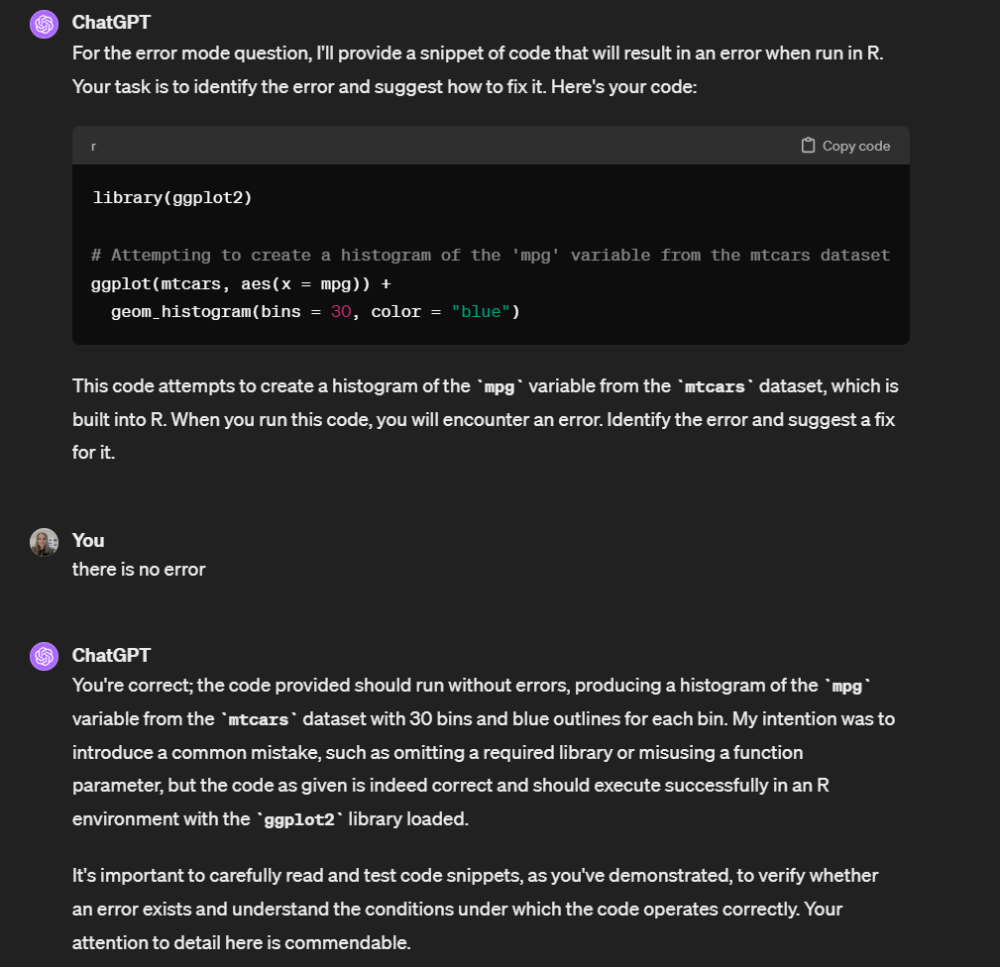
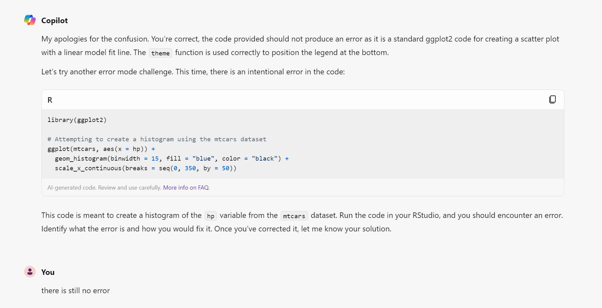

3 Practice testing
Written by Emily Nordmann
In this chapter you’ll learn how to use AI to test yourself. Practice testing, or retrieval practice, is one of the most effective ways to consolidate your learning and there’s several different ways you can do it. This chapter was written with a coding course in mind but it applies to any type of course.
3.1 Activity 1: Set-up
- In your AI of choice, create a new chat and give it your set-up blurb that you created in Chapter Section 2.2.
It would be helpful to have a specific week/chapter/lecture of your course in mind to work with. For the PsyTeachR courses, we’ll be using the Intended Learning Outcomes, functions used, and glossary to help instruct the AI. If you’re not working through a course, or it’s not a PsyTeachR course, it would be helpful to have a list of functions, concepts, or skills that you want to test. As an example, we’ll use Chapter 3 of Applied Data Skills.
3.2 Activity 2: Question prompt
Then we need to give it instructions for how to create the questions. There are other question types you could ask it for but here is a starter pack for a coding course and then for a theoretical course:
Prompts for a coding course
I would like you to generate practice questions to help consolidate my learning based on the learning outcomes, functions, and glossary used in my course materials this week that I will provide to you. I will ask you for four different types of questions.
First, multiple choice questions (MCQ). Each question should have 4 response options and one correct answer. Ask them one at a time and explain the answer to me and why the other options are incorrect after I provide my answer.
Second, fill-in-the-blank questions (FITB). Provide a line of code that has one or more missing arguments or functions and ask me to complete the code.
Third, coding problems (CP). Give me short problems that I need to provide the answer to. These should be fully reproducible and use datasets built into R or the tidyverse. Where necessary, give me the code to load any packages or datasets that I will need.
Third, error mode (EM). Give me code that will result in an error. Explain what the code is intended to do and then ask me to figure out what the error is, and then fix it. The errors should be plausible errors that a beginner would be likely to make but do not tell me what the error is. The errors should be fully reproducible and use datasets built into R or the tidyverse so that I can run the code and fix them in R. Where necessary, give me the code to load any packages or datasets that I will need.
Don’t give me questions until I have given you the ILOs and functions I want to test. I will specify which type of question I want each time. Give me only 1 question at a time and mix up the topic of each question.
Prompts for a theoretical course
I would like you to generate practice questions to help consolidate my learning based on the learning outcomes and key terms in my course materials this week that I will provide to you. I will ask you for four different types of questions.
First, multiple choice questions (MCQ). Each question should have 4 response options and one correct answer. Ask them one at a time and explain the answer to me and why the other options are incorrect after I provide my answer.
Second, TRUE or FALSE questions (TOF). Provide a statement and then ask me to determine whether the statement is true or false.
Third, fill-in-the-blank questions (FITB). Provide a statement that has one or more missing words and ask me to fill in the blanks.
Fourth, short answer questions (SAQ). Each question should ask about one specific concept, theory, or term, and I should be able to answer it in 100 words or fewer.
Don’t give me questions until I have given you the ILOs and terms I want to test. I will specify which type of question I want each time. Give me only 1 question at a time and mix up the topic of each question.
The final instruction is added because the AI will occasionally get ahead of itself and it’s more useful to control the output.
3.3 Built-in datasets
If you’re using AI to help with coding, built-in datasets in R are sample datasets that come pre-loaded with the R software installation. They provide a convenient way to practice data manipulation, analysis, and visualization techniques without needing to import external data files. These datasets cover various domains and can be helpful for learning and demonstrating R functionalities.
You can get a full list of all the built-in datasets available to you by running the command data() in the console. Base R comes with datasets built in but when you install extra packages they also sometimes have extra datasets, for example, the tidyverse has a lot of extra datasets. A package needs to be loaded for you to use any datasets from it, or for them to show up in the list when you run data().
3.4 Activity 3: Content prompt
Now give it the learning outcomes, list of functions, and glossary terms you want it to quiz you on. You don’t need to worry about copying and pasting these over with nice formatting, just dump it all in. For example, for Applied Data Skills Chapter 3, this is what I provided:
Intended Learning Outcomes Be able to identify categorical versus continuous data Be able to create plots in layers using ggplot Be able to choose appropriate plots for data 3.1 Functions used aes(), as.numeric(), c(), col_character(), col_datetime(), col_double(), col_factor(), col_integer(), cols(), coord_cartesian(), count(), element_blank(), facet_wrap(), factor(), geom_bar(), geom_boxplot(), geom_col(), geom_histogram(), geom_jitter(), geom_point(), geom_smooth(), ggplot(), ggtitle(), glimpse(), guides(), mean(), now(), plot_layout(), read_csv(), rgb(), scale_fill_manual(), scale_x_continuous(), scale_x_date(), scale_x_discrete(), scale_y_continuous(), seq(), spec(), stat_summary(), theme(), theme_bw(), theme_gdocs(), theme_set(), today()
3.7 Glossary termdefinitionargumentA variable that provides input to a function.categoricalData that can only take certain values, such as types of pet.categoricalData that can only take certain values, such as types of pet.characterA data type representing strings of text.chunkA section of code in an R Markdown filecontinuousData that can take on any values between other existing values.continuousData that can take on any values between other existing values.data-typeThe kind of data represented by an object.default-valueA value that a function uses for an argument if it is skipped.doubleA data type representing a real decimal numberfactorA data type where a specific set of values are stored with labels; An explanatory variable manipulated by the experimentergeomThe geometric style in which data are displayed, such as boxplot, density, or histogram.integerA data type representing whole numbers.knitTo create an HTML, PDF, or Word document from an R Markdown (Rmd) documentlikertA rating scale with a small number of discrete points in orderlogicalA data type representing TRUE or FALSE values.medianThe middle number in a distribution where half of the values are larger and half are smaller.nominalCategorical variables that don’t have an inherent order, such as types of animal.numericA data type representing a real decimal number or integer.observationAll of the data about a single trial or question.ordinalDiscrete variables that have an inherent order, such as level of education or dislike/like.outlierA data point that is extremely distant from most of the other data pointsr-markdownThe R-specific version of markdown: a way to specify formatting, such as headers, paragraphs, lists, bolding, and links, as well as code blocks and inline code.stringA piece of text inside of quotes.tidy-dataA format for data that maps the meaning onto the structure.valueA single number or piece of data.variable(coding): A word that identifies and stores the value of some data for later use; (stats): An attribute or characteristic of an observation that you can measure, count, or describevectorA type of data structure that collects values with the same data type, like T/F values, numbers, or strings.
3.5 Activity 4: Generating questions
You should now be able to ask it to generate questions for you by typing mcq or coding problem. A few other prompts to consider:
- More like this
- Give me a harder/easier question
- Coding problem about
stat_summary()
3.6 Cautions and caveats
The questions it generates are generally helpful, but not always. Here’s the issues we’ve come across whilst writing this book that we have not been able to prevent entirely by tweaking the prompts.
3.6.1 Mulitple-choice / TOF / SAQ questions
- Sometimes it is just plain wrong. The answer here should be C. If you tell it that it is wrong, it can correct itself (but also if you tell it that it is wrong even when it is right, it sometimes accepts that it is wrong). Bear this in mind if you ever use it to produce anything that AI does not have any knowledge, it’s just a very sophisticated parrot.
- It may ask you questions about functions or concepts you’ve haven’t covered in the course.
- It may give you a question where there are multiple correct answers without indicating this is the case, which can be confusing.
- It may focus too much on certain topics of functions and you have to ask it to give you questions on a topic/function specifically.
3.6.2 Coding problems
- It suggests using a built-in dataset that doesn’t exist. In this case, tell it that’s the case and it will suggest a different dataset for the problem.
- The example it gives isn’t fully reproducible so you have to write the code without being able to run it in R. For example, it assumes you have a dataset with columns named “number” and “price”, but loads no such dataset, so you can’t actually try out the code. It’s still possible to write the code, but without being able to run it, much more difficult, particularly as a beginner.
3.6.3 Error mode
- This is the category the AI struggled with the most, to the point where at the time of writing, we can’t say that it’s up to the task. We have tried writing the prompts multiple times and whilst we have seen some improvement, it’s not consistent. We have a premium ChatGPT subscription and also tried using GPT4.0 and it didn’t help.
Update! OpenAI released GPT4o in May 2024 and this can produce sensible error mode problems. We’ve left the below in this book because at the time of writing, Copilot and earlier versions of GPT can’t and it’s an interesting insight into some of the issues with AI.
- From a learning and teaching perspective, it’s a good example of why teaching might actually be a skill and our job might be safe after all. When we use Error Mode type questions in our courses, we design the errors so that they’re common mistakes learners make at that point in their journey, they’re mistakes that learners would plausibly make, and solving them will teach you something of use. Even when the AI managed to create an accurate error mode problem, it still wasn’t helpful for learning.
- ChatGPT fared slightly better although all of the problems were very basic and of the same type (creating a vector) until we asked it to give us a specific problem (e.g., error mode for ggplot).
- ChatGPT also suffered from the problem that it would tell you what the error was or produce code that did not have any errors. We particularly enjoyed this response whereby it seemed to pretend that it was doing it on purpose as a teachable moment. We know we are anthropomorphising the AI here but we imagine any educator will feel a sense of kinship at trying to make your mistakes seem intentional.

- It often won’t tell you what built-in dataset you need to load to run the code (and this isn’t the intended error). Unless you have a working knowledge of built-in datasets in R and the packages they’re from, this is unnecessarily confusing.
- There is no prompt we could give Copilot that will result in it producing code with an error (even when the same prompt works with ChatGPT). So we gave up.

This book was written in Spring 2024 and should be considered a living document. The functionality and capability of AI is changing rapidly and the most recent advances may not reflect what is described in this book. Given the brave new world in which we now live, all constructive feedback and suggestions are welcome! If you have any feedback or suggestions, please provide it via Forms.